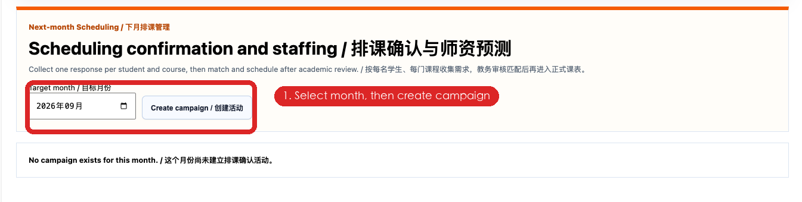
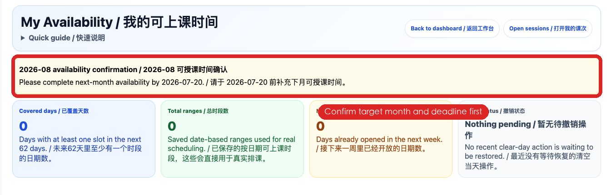
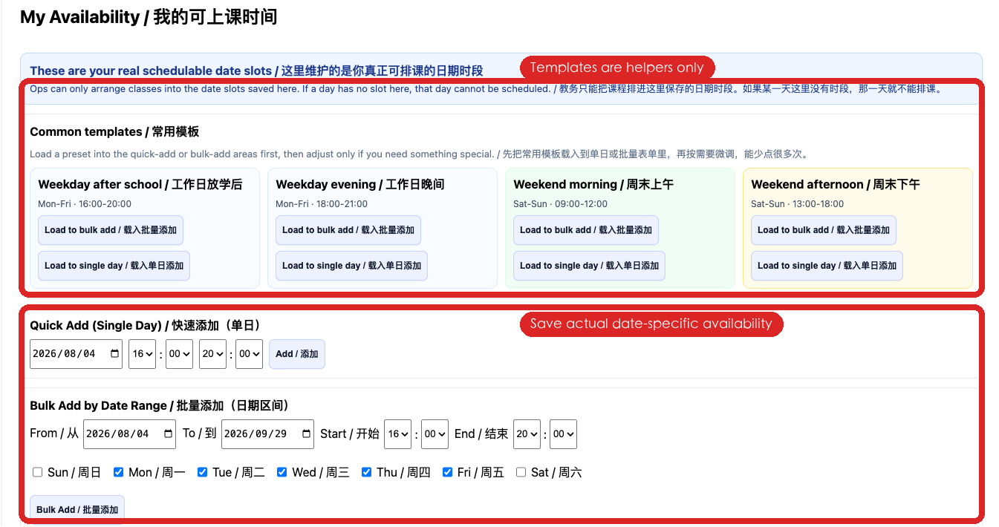
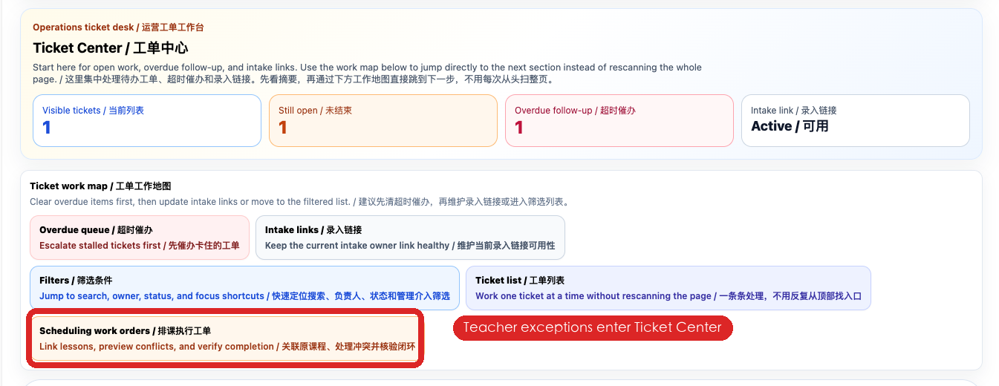
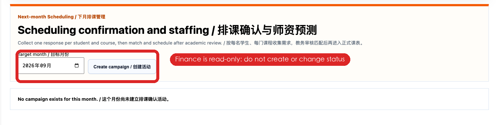
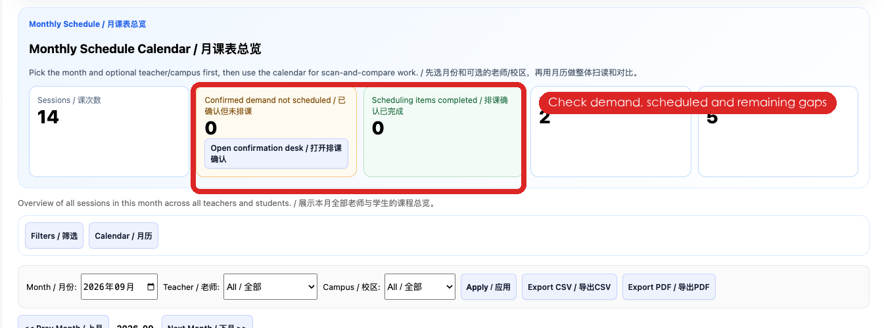

从老师提交可用时间、学校主动联系家长，到教务正式排课、财务查看人力需求及月末归档的端到端标准流程。
| 角色 | 主要工作 | 可以执行 | 不应执行 |
|---|---|---|---|
| Admin / Manager 管理员 / 管理层 | 发起活动、同步名单、控制开放与关闭、检查结果。 | 创建活动、刷新名单、开放/关闭/归档、导出 CSV、查看全部状态。 | 不替代教务随意标记已排课；不把家长意向当成正式课表。 |
| Academic / CS 教务 / 客服 | 联系家长、跟进回复、匹配老师、正式排课、处理异常。 | 复制提醒、保存备注、更新状态、查看匹配建议、进入正式课表、发起老师例外工单。 | 未创建正式课程前不得标记 SCHEDULED。 |
| Teacher 老师 | 在截止日前提交目标月份真实可用日期和时间。 | 模板辅助、单日快速添加、批量添加、检查日期日历。 | 不要只保存模板；模板本身不会形成真实可用容量。 |
| Parent 家长 | 按“每个学生 + 每门课程”分别提交次月需求。 | KEEP、CHANGE、PAUSE、UNSURE；填写时段、节数、模式、校区、老师偏好、不可上课日期。 | 不能直接创建、取消或修改正式课程。 |
| Finance 财务 | 查看预计课量、老师容量、缺口及人员需求。 | 只读查看、导出、用于和管理层/Teacher Jasmine讨论人力。 | 不得创建活动、改状态或代替教务排课。 |
老师可用时间截止
所有可能参与次月授课的老师，提交真实日期和时间。
开放家长填写
教务主动发送提醒，不等待家长先来询问。
追踪与澄清
处理未回复、信息不完整、老师时间冲突。
家长回复截止
教务完成主要匹配，进入正式排课与复核。
选择目标月，检查课包/课程/家长关联，创建活动并刷新名单。
保存目标月真实日期和时间；模板仅作辅助。
确认截止日期后开放家长填写。
复制家庭提醒，人工发送，回系统标记 SENT。
每个学生、每门课程分别填写 KEEP / CHANGE / PAUSE / UNSURE。
核对节数、时间、校区、老师容量；必要时创建例外工单。
进入正式月课表创建课程，确认准确后标记 SCHEDULED。
核对缺口、导出报告、关闭活动；稳定后归档。

Admin 后台 → Monthly Scheduling / 次月排课确认，或直接打开系统入口。
必须选“下一个需要安排的月份”，不要误选当前月。
老师截止日建议 D-12；开放日建议 D-10；家长截止日建议 D-3。
创建后状态为 DRAFT，此时家长还不能填写。
在月度交接记录中写明目标月、负责人、三个截止日期。
| 少了学生 | 检查学生状态、课包有效期、共享学生关联、家长关联。 |
| 课程不对 | 修改学生/课包的课程属性，并同步尚未上课的未来课程，再刷新。 |
| 重复工作项 | 检查是否存在重复有效课包或重复课程映射；不要直接全部排除。 |
| 不应联系 | 核实原因后标记 EXCLUDED，备注写明依据。 |

可实际授课的时间，已考虑通勤、会议和休息。
已有正式课程、请假、明确不可工作的时段。
老师立即更新日期记录，并通知负责教务复核已匹配项。

先建立常规每周模式，再把它应用到目标月份。应用后必须检查具体日期。
用于单个日期或临时增加时段。选择日期、开始、结束后保存。
用于一段日期内重复的周几。批量生成后逐日删除节假日或不可用日期。
| 状态 | 含义 | 允许动作 |
|---|---|---|
| DRAFT | 准备阶段，家长不可填写。 | 刷新名单、检查日期和数据。 |
| OPEN | 家长填写窗口已开放。 | 发送提醒、家长提交、教务跟进匹配。 |
| CLOSED | 停止新的家长提交。 | 教务仍可完成收尾、正式排课和复核。 |
| ARCHIVED | 历史记录已稳定。 | 只用于查询和审计。 |
可以发一条家庭消息，但内容必须列出每个孩子及对应课程。
示例：
您好，请分别确认 Steven（低幼龄英文）及 Sophia（Grade 5 Math）下月的上课安排。请在小程序中逐个学生、逐门课程提交。
发送后，系统内两个工作项都要分别标记 SENT，不能只处理其中一个。
| 同一学生两门课 | 需要提交两次，每门课一项。 |
| 兄弟姐妹 | 每个孩子分别提交。 |
| 共享课包 | 仍按学生与学习内容分别提交。 |
| 不同年级 | 课程、节数、老师偏好都可以不同。 |
| 已匹配/已排 | 对应工作项会锁定，家长不能继续改。 |
系统会将旧安排作为参考，但教务仍要重新核对：
| 正确 | 不够明确 |
|---|---|
| 周二 16:00–19:00 | 周二晚上 |
| 周六 09:00–12:00 | 周末都可以 |
| 8/14、8/21 不可上课 | 有几天可能不行 |
教务处理：CHANGE 提交后先进入需求核对，再看老师容量；如果资料不足，标记 NEEDS_CLARIFICATION。
当教务已匹配或已正式排课后，家长端停止随意修改，避免课表与意向来回冲突。
如家长随后变化，必须联系教务，由教务走正式改课流程并更新本工作项。
| 情况 | 本工作项 | 还需要做什么 |
|---|---|---|
| 暂停但仍有已安排未来课 | PAUSED | 教务进入正式课表逐节取消/改期，不能只改状态。 |
| 不确定但接近截止日 | NEEDS_CLARIFICATION | 主动电话/微信跟进，并写最后联系时间。 |
| 已排后又变化 | 先保留 SCHEDULED | 完成正式课表调整后，再把工作项更新到相符状态。 |
示例：8/25 Emily 微信确认：Steven 周二 17:00 后可上；等待 Teacher Jasmine 8/26 前确认老师。
| 优先级 | 先处理 | 原因 |
|---|---|---|
| 1 | NEEDS_CLARIFICATION | 资料不完整会阻塞匹配。 |
| 2 | SUBMITTED 且老师容量紧张 | 越晚越难协调。 |
| 3 | SENT 未回复 | 需要第二轮主动提醒。 |
| 4 | KEEP 且原时段稳定 | 通常较容易完成，但仍要核对正式课表。 |
| 状态 | 准确含义 | 进入条件 / 下一步 |
|---|---|---|
| NOT_SENT | 尚未实际向家长发出提醒。 | 发送成功后改 SENT。 |
| SENT | 提醒已发，等待家长操作。 | 家长打开后可变 VIEWED；提交后 SUBMITTED。 |
| VIEWED | 家长看过但未完成。 | 临近截止主动跟进。 |
| SUBMITTED | 家长已提交完整意向。 | 教务核对并寻找匹配。 |
| NEEDS_CLARIFICATION | 时间、节数、模式或课程信息不足/冲突。 | 联系家长，备注清楚后再继续。 |
| MATCHED | 已选定可行老师/时段，但正式课表尚未完全建立。 | 进入正式月课表创建课程。 |
| SCHEDULED | 正式课表已有目标月、该学生、该课程的课程。 | 复核数量后完成。 |
| TEACHER_EXCEPTION | 标准老师容量无法满足，需要升级处理。 | 进入工单中心协调老师。 |
| PAUSED / NO_RESPONSE / EXCLUDED | 暂停 / 多次联系仍未回复 / 有依据排除。 | 必须有备注和最后处理证据。 |
学生课程属性变化时，未来尚未上课的 Session 也要同步修改；历史已上课程保持原记录。

【次月排课老师缺口】2026-09 · 学生姓名 · 课程 · 需要 X 节
正文必须含：家长时段、不可上课日期、线上/线下、校区、已尝试老师、缺口原因、最晚决定日。
| 时间 | 动作 | 系统记录 |
|---|---|---|
| 第一轮 D-10 | 发送家庭提醒和小程序入口。 | 实际发出后标 SENT；备注日期、渠道、发送人。 |
| 第二轮 D-5 | 对 SENT/VIEWED 未提交者再次提醒。 | 保留状态，追加第二次联系备注。 |
| 第三轮 D-3 | 电话或直接微信确认是否继续上课。 | 写明联系结果和承诺回复时间。 |
| 截止后 | 仍无回复者由负责人判断。 | 标 NO_RESPONSE；不得擅自认为 KEEP 或 PAUSE。 |
您好，为提前安排【目标月份】老师及课程，请于【截止日期】前在家长小程序中，分别确认每位学生、每门课程的上课需求。提交为排课意向，学校会在匹配老师后确认正式课表。谢谢。


SCHEDULED 工作项对应正式课表实际课程。
共享课包的每节课都有明确上课学生。
提醒、课表和学生当前课程属性一致。
适用时点：家长提交窗口结束，不再接受新的家长修改。
适用时点：正式排课和异常处理稳定，报告核对完成。
| 教务负责人 | Admin / Manager | Finance |
|---|---|---|
| 排课与状态一致；异常均有下一步。 | 名单、报告、课程归属和审计记录完整。 | 已取得净需求和人员缺口数据。 |
| 问题 | 原因 | 正确处理 |
|---|---|---|
| 家长看不到入口 | 活动未 OPEN、家长关联不正确或没有工作项。 | 检查活动状态、家长学生关联，修正后刷新名单。 |
| 提醒里漏了兄弟姐妹 | 只按一个学生生成消息或未来课程调整后未刷新。 | 按家庭汇总消息，但保留每个学生/课程独立工作项；必要时刷新。 |
| 共享课包课程不一样 | 误把课包课程当作所有共享学生的唯一课程。 | 设置学生层面的课程属性；分别确认和排课。 |
| 老师明明有空却显示缺口 | 只设置模板，没有具体日期记录；或容量已分配。 | 让老师生成并保存日期记录，检查已有课程与重复分配。 |
| 已 MATCHED 但不能完成 | 还没有对应正式 Session。 | 先在正式课表创建并核对课程，再标 SCHEDULED。 |
| 课程名称还是旧的 | 学生/课包属性已改，但未来未上课程未同步。 | 修改未来未上课程；历史已上课程保持不变。 |
| 财务想修改活动 | 角色职责混淆。 | 财务只读，写操作转 Admin/教务。 |
| 家长截止后临时改变 | 真实计划变化。 | 教务走正式改课流程，完成后同步工作项状态和备注。 |
目标月份 · 活动状态 · 总工作项 · 已排课 · 未回复 · 暂停 · 老师例外 · 人力缺口 · 未完成原因 · 下一负责人 · 最晚完成日。